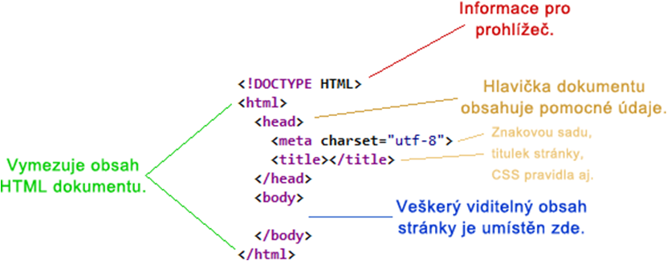

Úplně první web
První webová stránka vznikla v 6. srpna 1991 v Evropské organizaci pro jaderný výzkumu (CERN). Byla
to informační stránka projektu Wolrd Wide Web.
Dokonce stále běží v původní
podobě!
Kostra stránky
Webová stránka je dokument, který se skládá z textových informací, tzv. elementů. Kostru prázdné stránky můžete vidět níže.
Tyto elementy se dělí na dva druhy - párový a nepárový.
Základní textové elementy
Nadpis
Zvýrazněný text, který způsobí zalomení řádku. Může mít různě veliké úrovně od 1 do 6.
Ukázka: <h1> </h1>, <h4> </h4>
Odstavec
Klasický text, který zajišťuje odsazení textu a zalomení řádku. Text lze psát i bez toho, ale nevypadá to pak pěkně.
Element: <p> </p>
Kurzíva
Prvek, který udělá z klasického textu kurzívu. Nezalamuje řádky.
Element: <em> </em>
Ztučnění
Prvek, který udělá text tučným. Také nezalamuje řádky.
Element: <strong> </strong>
Zalomení řádku - break
Ruční ukončení řádku za účelem
pokračovat na řádku novém.
Element: <br>